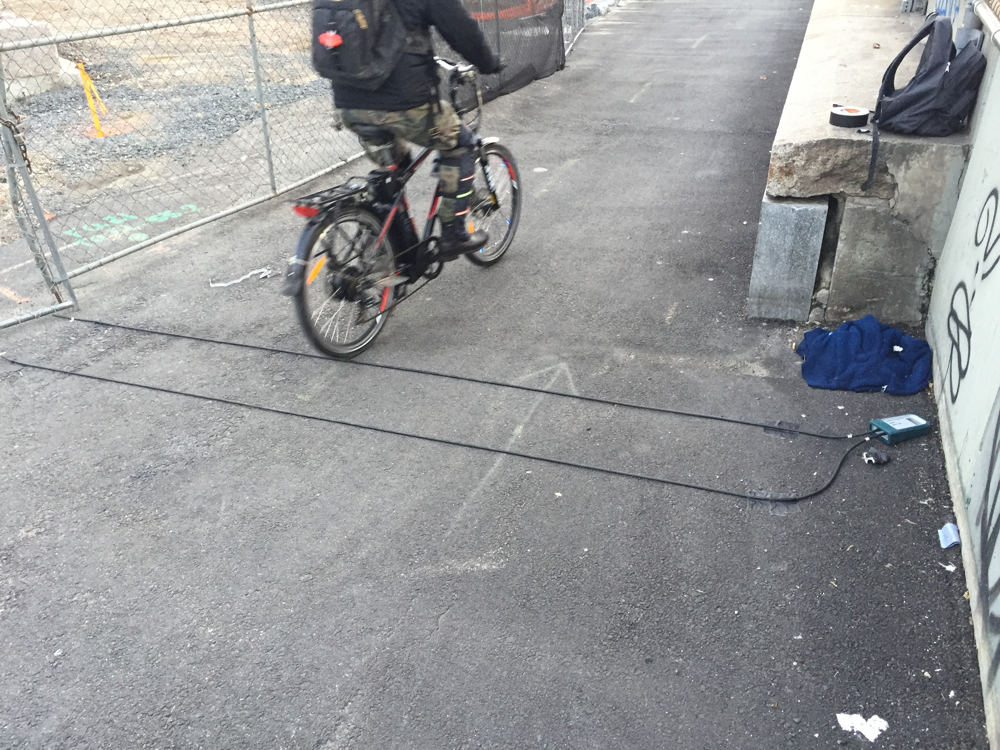

WayCount is a Tomorrow Lab-developed traffic counting platform that I got to work on to gage its feasibility for counting bike traffic in addition to cars. Initially my work consisted of testing with both a simulator and real bike traffic. When I discovered that the WayCount’s hardware wasn’t sensitive enough to detect most bikes, I made minor tweaks to its circuitry to improve detection and speed measurement without compromising its excellent battery life.

My test setup for bike counting on the entrance to the Manhattan Bridge just off Canal Street in lower Manhattan.
After verifying on the oscilloscope that bicycle wheels were being properly detected, I collected more data from outdoor testing and looked at how well the WayCount’s algorithms were interpreting the raw data as passing bicycles. I also collected and closely analyzed data collected from cars to pinpoint errors in speed measurement or vehicle classification that helped to inform Firmware revisioning.